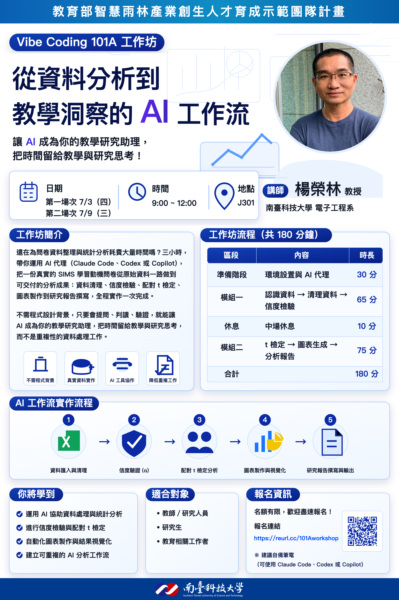
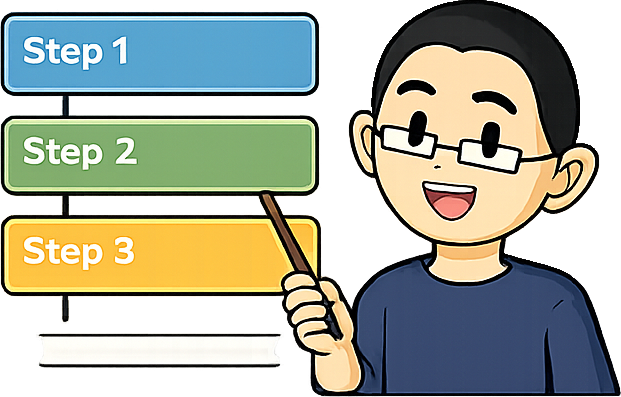

還在為問卷資料整理與統計分析耗費大量時間嗎？三小時，帶你運用 AI 代理（Claude Code、Codex 或 Copilot），把一份真實的 SIMS 學習動機問卷從原始資料一路做到可交付的分析成果：資料清理、信度檢驗、配對 t 檢定、圖表製作到研究報告撰寫，全程實作一次完成。不需程式設計背景，只要會提問、判讀、驗證，就能讓 AI 成為你的教學研究助理，把時間留給教學與研究思考，而不是重複性的資料處理工作。Still spending hours wrangling survey data and running statistics? In three hours, learn to put an AI agent (Claude Code, Codex, or Copilot) to work, taking a real SIMS learning-motivation survey from raw data all the way to a deliverable analysis: data cleaning, reliability testing, a paired t-test, chart-making, and writing the research report, built end to end in one sitting. No programming background needed, only the ability to ask, read, and verify, so AI becomes your teaching-research assistant and frees your time for teaching and research thinking instead of repetitive data work.
整個工作坊只圍繞一條不漂移的資料契約：每一段的產出都是下一段的輸入，全部存到 labs/_results/。核心節奏是提問 → 驗證 → 修正。The whole workshop follows one data contract that never drifts: each block's output feeds the next, all saved to labs/_results/. The loop is Prompt → Verify → Iterate.
| 區段 | 內容 | 時長 |
|---|---|---|
| 準備階段 | 環境設置與 AI 代理 | 20 分 |
| 練習 0–2 | 認識資料 → 清理資料 → 信效度檢測 | 65 分 |
| 休息 | 中場休息 | 10 分 |
| 練習 3–5 | t 檢定 → 圖表生成 → 分析報告 | 75 分 |
| 收尾階段 | 資安與隱私收尾 | 10 分 |
| 合計 | 180 分 |
| Block | Content | Min |
|---|---|---|
| Prep | Setup check + agentic mindset | 20 |
| Ex 0–2 | Meet data → clean → reliability | 65 |
| Break | Mid-session break | 10 |
| Ex 3–5 | t-test → charts → report | 75 |
| Closing | Privacy wrap-up | 10 |
| Total | 180 |
這一段的目標：讓全場 20 分鐘內站上同一條起跑線。工作坊最常卡關的不是分析，而是環境不一致 - 有人指令找不到、有人套件版本不對、有人還沒登入代理。教室電腦已預先安裝好 VS Code、Codex extension、Codex CLI、Python、Node.js 與必要 Python 套件；自備筆電的學員不用先卡在安裝細節，講師會帶著安裝，TA 會協助排除問題。把這一關當成暖身與排雷，後面五個練習才不會在環境問題上流失時間。Goal of this block: get the whole room onto the same starting line within 20 minutes. The usual blocker in a workshop is not the analysis but an inconsistent environment - a missing command here, a wrong package version there, an agent not yet signed in. Classroom PCs are preinstalled with VS Code, the Codex extension, Codex CLI, Python, Node.js, and required Python packages; learners on personal notebooks should not get stuck on install details, the instructor walks them through it and TAs help clear problems. Treat this unit as warm-up and de-risking so the five later labs do not bleed time on setup.
每樣工具的角色：VS Code 是編輯器與工作台；Codex extension 讓代理直接在編輯器裡讀寫檔案；Codex CLI 是終端機版的同一個代理；Python 負責真正的資料分析，Node.js 則是代理工具鏈的執行環境；必要套件（pandas、scipy、openpyxl、matplotlib）分別處理表格、統計、Excel 讀取與畫圖。不需要背這些名字，只要知道少了哪一個、後面哪一關會出錯。What each tool is for: VS Code is the editor and workbench; the Codex extension lets the agent read and write files right inside the editor; the Codex CLI is the same agent from the terminal; Python does the actual data analysis while Node.js runs the agent toolchain; the required packages (pandas, scipy, openpyxl, matplotlib) handle tables, statistics, Excel reading, and charts. You need not memorize the names, only which later lab breaks if one is missing.
怎麼算「就緒」：真正的驗收不是看安裝有沒有跑完，而是讓代理做一件實事 - 請它「列出 labs/data/ 內所有檔案，每個用一句話說明」。看到資料檔清單就代表編輯器、代理、檔案存取三者都通了。這也順手示範了本工作坊的核心習慣：先讓代理動手、再自己核對結果，而不是相信安裝畫面上的綠色勾勾。What "ready" means: the real check is not whether installs finished but whether the agent can do something real - ask it to "list every file in labs/data/ with a one-line description". A file list proves the editor, the agent, and file access are all wired up. It also previews the workshop's core habit: let the agent act, then verify the result yourself, rather than trusting a green checkmark on an installer.
pandas、scipy、openpyxl、matplotlib。pandas, scipy, openpyxl, matplotlib.本段先確認每個人都能進入同一個工作流程：開工作坊資料夾、啟動代理、讓代理讀到資料檔。This block confirms everyone can enter the same workflow: open the workshop folder, launch an agent, and let it read the data files.
直接開 VS Code，確認 Codex extension 可用；再用內建終端機確認 codex、python3、node 可執行。Open VS Code, confirm the Codex extension works, then check codex, python3, and node from the integrated terminal.
照講師步驟安裝 VS Code、Node.js、Python、Codex；TA 協助處理安裝與登入問題。Follow the instructor to install VS Code, Node.js, Python, and Codex; TAs help with installation and sign-in issues.
請代理：「列出 labs/data/ 內所有檔案，每個檔案用一句話說明。」看到資料檔清單就代表環境可用。Ask the agent: "List every file in labs/data/ with a one-line description." A file list means the environment is ready.
完整安裝細節見「教材資料 → 安裝與設定」中的 agent-setup.md 與 vscode-setup.md。Full setup details are in agent-setup.md and vscode-setup.md under Materials -> Setup.
這一段的目標：先把「代理」和「聊天」的差別講清楚，後面五關才有共同語言。Chat 主要回覆，Agent 會動手。傳統 Chat 你問一句、它回一段，複製貼上、開檔案、執行、Debug 全是你在搬運；AI 代理則是你給目標與限制，它自己規劃步驟、讀寫檔案、跑程式、看錯誤再修正，你退一步當審查者。本工作坊要練的不是背指令，而是把目標交代清楚，讓代理動手，再由你核對結果。Goal of this block: pin down the difference between an "agent" and a "chat" so the five labs share one vocabulary. Chat mainly replies; an agent acts. With plain chat you ask and it answers, and copy-paste, opening files, running, and debugging are all on you; an AI agent takes your goal and constraints and plans the steps, reads and writes files, runs code, and fixes its own errors while you step back as the reviewer. This workshop is not about memorizing commands but about stating the goal clearly, letting the agent act, and verifying the result.
為什麼這個差別重要：因為代理會真的改你的檔案、執行你的指令，它的能力越大，你「核對」的責任就越大。代理會出錯、會幻想不存在的欄位、會把分析方向弄反 - 這不是它壞掉，而是它本來就會這樣，所以每一關都刻意保留需要你判斷的環節。Computer Use 更進一步讓代理看螢幕、點介面、跑流程；因為它會影響電腦狀態，任務要小、權限要看清楚。今天的練習聚焦在讀寫檔案型的代理，但同一套把關心法對 Computer Use 一樣適用。Why the difference matters: because an agent really edits your files and runs your commands, the more capable it is, the more responsibility you carry to verify. Agents err, hallucinate columns that do not exist, and flip the direction of an analysis - that is not them breaking, it is how they normally behave, which is why every lab keeps a judgment call for you. Computer Use goes further, letting an agent see the screen, click the UI, and run flows; since it can change computer state, keep tasks narrow and review permissions. Today's labs focus on file-editing agents, but the same review mindset transfers to Computer Use.
核心節奏 - 提問 → 驗證 → 修正：這是貫穿全工作坊的迴圈，後面每一關都會再走一次。每次拿到結果，先問自己一句「我怎麼知道它是對的？」，再決定要接受、追問還是要它重做。把這句話練成反射，比學會任何一個指令都重要；它就是「人為什麼要留在迴圈裡」的答案。The core loop - Prompt, Verify, Iterate: this is the rhythm running through the whole workshop, repeated in every later lab. Each time you get a result, first ask yourself "how do I know it's right?" before you accept it, probe further, or ask for a redo. Making that question a reflex matters more than learning any single command; it is the answer to "why a human stays in the loop".
你問一句，AI 回一段建議或程式碼；你自己複製貼上、開檔案、執行與 Debug。You ask, it replies with advice or code; you copy-paste, open files, run it, and debug.
你給目標與限制，代理規劃步驟、讀寫檔案、跑程式、修正錯誤；你審查結果。You give the goal and constraints; the agent plans, edits files, runs code, fixes errors; you review.
OpenClaw 是跑在自己裝置上的個人助理，可從 WhatsApp、Telegram、Slack 等通訊通道互動，透過 Gateway 串接瀏覽器、檔案、行事曆與各種工具。它比較像「長期在線的數位同事」。OpenClaw is a personal assistant that runs on your own devices. You can reach it from channels like WhatsApp, Telegram, and Slack, while its Gateway connects to browsers, files, calendars, and tools. Think of it as a long-running digital coworker.
Computer Use 適合處理圖形介面任務：操作桌面 app、使用已登入瀏覽器、調整設定、重現只有 UI 才看得到的錯誤。因為它會影響電腦狀態，任務要小、權限要看清楚。Computer Use fits GUI tasks: operating desktop apps, using a signed-in browser, changing settings, or reproducing bugs only visible in UI. Since it can affect computer state, keep tasks narrow and review permissions.
核心節奏The loop提問 → 驗證 → 修正：每次拿到結果都問自己「我怎麼知道它是對的？」代理會出錯、會幻想欄位、會把方向弄反，自己核對是你的工作。Prompt → Verify → Iterate. Every result: ask "How do I know it's right?" Agents err, invent columns, and flip directions; verifying is your job.
這一關的目標：先不要分析，先讓代理帶你認識資料。請它列出資料夾、打開前測 Excel、摘要工作表與欄位，再讀 SIMS 題目說明、解釋四個構面。重點是把檔案位置與問題講清楚，並養成「AI 說完，我自己對照原檔確認」的習慣。先把地圖看懂，後面五關才不會走歪。Goal of this unit: do not analyze yet; first let the agent introduce the data. Have it list the folder, open the pre-test Excel, summarize sheets and columns, then read the SIMS item guide and explain the four subscales. The point is stating the files and the question clearly and building the habit of "after the AI answers, I check the source myself". Read the map first so the next five labs stay on course.
這份量表是什麼：本問卷改編自情境動機量表 SIMS（Situational Motivation Scale），背後理論是 Deci 與 Ryan 的自我決定理論（SDT）。共 16 題，採 7 點李克特量表（1＝完全不符合 ～ 7＝完全符合），每題前面都接同一句題幹：「你現在為什麼正在進行這個活動？」，四個構面就是四種不同的回答理由。What the instrument is: this survey is adapted from the Situational Motivation Scale (SIMS), grounded in Deci and Ryan's Self-Determination Theory (SDT). It has 16 items on a 7-point Likert scale (1 = strongly disagree to 7 = strongly agree), each following the same stem: "Why are you currently doing this activity?" The four subscales are four different reasons people give.
四個構面（依自我決定程度由高到低）：IM ＞ IR ＞ ER ＞ AM。IM 內在動機（題 1,5,9,13）：因為本身有趣、做起來愉快，越高越好。IR 認同調節（題 2,6,10,14）：不一定好玩，但認同它的價值而自願去做，越高越好。ER 外在調節（題 3,7,11,15）：因被要求、想要獎勵或怕被當而做，越高代表越靠外在壓力、品質較低。AM 無動機（題 4,8,12,16）：根本不知為何而做、覺得沒意義。The four subscales (high to low self-determination): IM > IR > ER > AM. IM intrinsic (items 1,5,9,13): doing it because it is interesting and enjoyable, higher is better. IR identified (items 2,6,10,14): not necessarily fun, but you value it and choose it, higher is better. ER external (items 3,7,11,15): doing it because required, for a reward, or to avoid failing, higher means more external pressure and lower quality. AM amotivation (items 4,8,12,16): no idea why, sees no meaning.
最關鍵的一個提醒（方向相反）：AM 是唯一「分數越高越糟」的構面。AM 越高代表學生越沒有動機，所以課程結束後 AM 下降才是好消息、AM 上升是壞消息。其他三個構面都是越高越好；解讀時千萬別把 AM 也當成「越高越好」，這是後面 t 檢定最容易讀反的地方。The one critical warning (reversed direction): AM is the only subscale where higher is worse. A higher AM means less motivation, so after the course AM falling is good news and AM rising is bad news. The other three are better when higher; never treat AM as "higher is better", which is exactly where the later t-test is most often misread.
資料夾裡有什麼：sims-questionnaire-items.md（量表說明）、pre-test.xlsx 與 post-test.xlsx（前測第 3 輪、後測第 4 輪，各 4 個工作表）、grade-report.csv（51 位學生的成績）、instructor-spoken-reflection.md（教師口述省思，練習 6 才用）。我們之後只會用到工作表 答題記錄(選項編號)；答題分數比重 是平台自算的彙總分，任何練習都不採用。What is in the folder: sims-questionnaire-items.md (the item guide), pre-test.xlsx and post-test.xlsx (pre = round 3, post = round 4, four sheets each), grade-report.csv (51 students' grades), and instructor-spoken-reflection.md (the spoken reflection, used only in Ex 6). Later we use only the 答題記錄(選項編號) sheet; 答題分數比重 is a platform-computed summary that no lab uses.
動手步驟與埋下的線：① 列出 data/ 檔案；② 看 pre-test.xlsx 的工作表與欄位；③ 讀題目說明、解釋四構面並指出 AM；④ 看 grade-report.csv 的人數與欄位；⑤ 加分：比前後測作答人數。你會發現前測 43、後測 44，人數不一樣，而且每張表第一列其實是大標題 - 這正是練習 1 要處理的兩個陷阱。下面「跟著解答一步一步問」就是這五步。The hands-on steps and the threads they plant: (1) list the data/ files; (2) inspect pre-test.xlsx sheets and columns; (3) read the item guide, explain the four subscales, name AM; (4) check grade-report.csv counts and columns; (5) bonus, compare pre/post respondent counts. You will find 43 took the pre and 44 the post, a mismatch, and that row 1 of each sheet is a banner title - exactly the two traps Ex 1 handles. The "Follow the solution" steps below are these five.
任務：認出資料檔、工作表、欄位、四個構面，以及哪個構面「分數越高越不好」。本階段先不清理、不算統計。Task: identify the files, sheets, columns, four subscales, and which subscale is worse when higher. No cleaning or statistics yet.
題 1,5,9,13 · 越高越好Items 1,5,9,13 · higher = better
題 2,6,10,14 · 越高越好Items 2,6,10,14 · higher = better
題 3,7,11,15 · 外在壓力Items 3,7,11,15 · external pressure
題 4,8,12,16 · ⚠ 越高越糟Items 4,8,12,16 · ⚠ higher = worse
在同一個對話裡，一則訊息一則訊息送出、看完回覆再送下一則；這種一來一往才是真正要練的。In the same conversation, send one message at a time and read the reply before the next; this back-and-forth is what you are really practising.
先請代理看 data/ 裡有哪些檔案，每個用一句話說明就好，先不要做分析。First ask the agent what files are in data/, one line each, and no analysis yet.
接著打開 pre-test.xlsx，告訴你它有哪些工作表、每個工作表大概有哪些欄位、幾列。正解是 4 個工作表。Then open pre-test.xlsx and have it tell you the sheets, and roughly the columns and row counts of each. The answer is 4 sheets.
請它讀 sims-questionnaire-items.md，用白話解釋 IM／IR／ER／AM，並指出哪一個是「分數越高反而越糟」。正解是 AM。對照原檔自己確認一次。Have it read sims-questionnaire-items.md, explain IM/IR/ER/AM in plain words, and name which is "higher is worse". The answer is AM. Check it against the source yourself.
最後看一下 grade-report.csv，有幾位學生、有哪些欄位？正解是 51 位，欄位 id, rank, course, normal, midterm, final。Finally look at grade-report.csv: how many students and what columns? The answer is 51 students with columns id, rank, course, normal, midterm, final.
順手比一下 pre-test 和 post-test 的答題記錄，兩邊作答人數一不一樣？正解是前測 43、後測 44，不一樣 - 這是刻意設計，練習 1 會處理。In passing, compare the pre-test and post-test response records: are the respondent counts the same? The answer is 43 pre, 44 post, not equal - by design, and Ex 1 handles it.
pre-test.xlsx 有 4 個工作表，並能列出各表欄位與列數。The agent reports 4 sheets in pre-test.xlsx and can list each sheet's columns and row counts.grade-report.csv 有 51 位學生；指出 AM 為分數越高越不好的構面。The agent reports 51 students in grade-report.csv; AM is identified as worse when higher.完整題目與提示起手式：Full worksheets and prompt starters: 📦 下載練習整包 .zip📦 Download the labs .zip（含 labs/zh、labs/en 與資料）。 (includes labs/zh, labs/en and data).

這一關的目標：把「給人看」的 Excel 變成「給程式算」的乾淨表格。真實資料永遠不乾淨：這份問卷每張工作表的第一列是大標題、欄名是一整句中文長題目，而且前測與後測的填答人數不一樣。沒先清乾淨，後面的信度與 t 檢定全會算錯。這一關真正在練一句話：先檢查、再相信。Goal of this unit: turn human-readable Excel into clean, computable tables. Real data is never tidy: every sheet here has a title banner in row 1, column names that are full Chinese sentences, and a different number of respondents in pre vs post. Skip the cleaning and the later reliability and t-test all come out wrong. The real skill this unit drills is one rule: check first, then trust.
需要的觀念：資料清理是把雜亂原始檔整理成一致、可計算的表格；header=1 告訴程式真正欄名在第二列、不是第一列標題；分數反向是因為表中存的是「選項編號」不是同意分數，選項 1 其實代表 7 分，所以要換算 actual_score = 8 - option_number；配對資料指同一人前後測都有，才能做配對比較。Concepts you need: data cleaning turns messy raw files into a consistent, computable table; header=1 tells the code the real headers are on row 2, not the row-1 title; the score reversal is needed because the cells store an option number, not an agreement score (option 1 actually means 7 points), so convert with actual_score = 8 - option_number; paired data means a student present in both pre and post, the only ones you can compare pairwise.
資料與三個刻意陷阱：只取每份 xlsx 的 答題記錄(選項編號) 工作表。陷阱一，第一列是像「第三次學習問卷調查」的大標題，真正欄名在第二列；陷阱二，數字是選項編號、不是分數；陷阱三，前測 43 人、後測 44 人，人數不同，必須用 帳號 合併。The data and three built-in traps: use only the 答題記錄(選項編號) sheet in each xlsx. Trap 1, row 1 is a banner title like "the 3rd learning survey" and the real headers are on row 2. Trap 2, the numbers are option codes, not scores. Trap 3, 43 took the pre and 44 the post, so counts differ and you must merge on 帳號.
動手步驟：① 讀兩份工作表並清理（跳過標題、改名 Q1–Q16、換算分數），存 clean_pre.csv／clean_post.csv；② 用 帳號 找出前後測都做的人，存 matched_ids.csv，回報各組人數與帳號；③ 檢查所有作答都在 1–7、沒有缺漏；④ 加分：比對第 11 題前後測題目文字是否被改寫。下面「跟著解答一步一步問」就是把這四步拆成可直接送出的訊息。The hands-on steps: (1) read both sheets and clean them (skip the title, rename to Q1–Q16, convert scores), saving clean_pre.csv/clean_post.csv; (2) match students present in both on 帳號, save matched_ids.csv, and report each group's count and accounts; (3) check every answer is 1–7 with no blanks; (4) bonus, compare Q11's wording across pre and post. The "Follow the solution" steps below break these four into messages you can send as-is.
正確長相：clean_pre.csv 43 列、clean_post.csv 44 列，欄位皆為 帳號, Q1…Q16，值在 1–7 且無缺漏；配對 41 人，只做前測 S05、S47，只做後測 S01、S38、S41。若算出 44／45，多半是沒跳過大標題、或把空白列也算進去了。What "correct" looks like: clean_pre.csv has 43 rows and clean_post.csv 44, columns 帳號, Q1…Q16, values 1–7 with no blanks; 41 matched, pre-only S05, S47, post-only S01, S38, S41. If you get 44/45, you probably did not skip the title row or counted blank rows.
為下一關埋的線：第 11 題屬於 ER 構面，它在前後測被改寫，正是練習 2「ER 前測信度只有約 0.36」的線索，也是練習 3 要談的「工具一致性」。之後所有構面平均、t 檢定與圖表，都要用這一關清好的 clean 檔，不可再回頭改原始 xlsx。The thread to the next units: Q11 belongs to the ER subscale, and its rewording across pre/post is exactly the clue behind "ER pre reliability is only about 0.36" in Ex 2 and the "tool consistency" question in Ex 3. Every later subscale mean, t-test, and chart must use these cleaned files; never edit the raw xlsx again.
任務：輸出 clean_pre.csv、clean_post.csv、matched_ids.csv，並回報前測、後測、配對、只做單次的人數與帳號。Task: output clean_pre.csv, clean_post.csv, and matched_ids.csv, then report pre, post, matched, and one-time-only counts/accounts.
在同一個對話裡，一則訊息一則訊息送出；每一步都接續前一步，不必重講前提。照著做就能跑完整條清理流程。Send the messages one at a time in the same conversation; each step builds on the last, so you never re-explain. Follow them in order to run the whole cleaning flow.
請代理讀兩份 xlsx 裡名為 答題記錄(選項編號) 的工作表，提醒它真正欄名在第二列（header=1），並把選項編號換算成實際分數 actual_score = 8 - option_number；只留 帳號，把 16 題依序改名成 Q1–Q16，存成 clean_pre.csv 與 clean_post.csv。Ask the agent to read the 答題記錄(選項編號) sheet in both xlsx files, remind it the real headers are on row 2 (header=1), and convert option numbers with actual_score = 8 - option_number; keep only 帳號, rename the 16 items Q1–Q16, and save clean_pre.csv and clean_post.csv.
接著請它用 帳號 找出前後測都做的學生，存成 matched_ids.csv，並印出：前測幾人、後測幾人、配對幾人，以及只出現在單邊的帳號是誰。正解是 前測 43、後測 44、配對 41；若得到 44／45，多半是沒跳過大標題或把空白列也算進去了。Then have it match students present in both surveys on 帳號, save matched_ids.csv, and print pre, post, and matched counts plus the accounts that appear on only one side. The right answer is 43 pre, 44 post, 41 matched; 44/45 usually means the title row was not skipped or blank rows got counted.
再請它核對：所有作答是不是都落在 1 到 7 之間？有沒有缺漏（空白）？這一步是替你的資料把關，別跳過。Next, ask it to confirm every answer falls between 1 and 7 with no blanks. This step guards your data, so do not skip it.
最後問一句：第 11 題在前後測的「題目文字」一樣嗎？若被改寫過，前後測還能不能直接比較？先記下這個線索，練習 2／03 會用到。Finally ask: is Q11's wording the same across pre and post? If it was reworded, can pre and post still be compared directly? Note the clue now; Ex 2/03 will use it.
header=1）。Row 1 is a title; the real headers are on row 2 (header=1).actual_score = 8 - option_number。The numbers are option numbers, not real scores; convert with actual_score = 8 - option_number.clean_pre.csv 43 列、clean_post.csv 44 列，值都在 1–7。clean_pre.csv 43 rows, clean_post.csv 44 rows, all values 1–7.這一關的目標：先把 16 題合成 4 個構面，再檢查這些構面靠不靠得住。分數算得出來不代表可信。這一關練的是在分析之前先問「這份問卷可不可信」，並抓到真正的警訊：ER 前測信度只有約 0.36。Goal of this unit: combine the 16 items into 4 subscales, then check whether those subscales hold up. Getting a number does not make it trustworthy. This unit drills asking "is this instrument reliable" before analyzing, and catching the real red flag: ER pre reliability is only about 0.36.
需要的觀念：構面分數是把一個構面的四題取平均，合成一個概念分數；信度（reliability）問的是同一構面各題是否量到同一件事、結果穩不穩定；Cronbach's α是 0 到 1 的一致性指標，越接近 1 越好，常以 0.7 為可接受門檻；效度（validity）則問是否真的量到你想量的概念。Concepts you need: a subscale score averages a subscale's four items into one concept score; reliability asks whether those items measure the same thing consistently; Cronbach's alpha is a 0 to 1 consistency index, closer to 1 is better, with 0.7 a common acceptable threshold; validity asks whether it truly measures the concept you intend.
用到的資料與對應：讀練習 1 清好的 clean_pre.csv／clean_post.csv，構面對題目的對應是 IM=Q1,Q5,Q9,Q13；IR=Q2,Q6,Q10,Q14；ER=Q3,Q7,Q11,Q15；AM=Q4,Q8,Q12,Q16。每位學生的構面分數＝該構面四題的平均。The data and the mapping: read Ex 1's cleaned clean_pre.csv/clean_post.csv; the subscale-to-item map is IM=Q1,Q5,Q9,Q13; IR=Q2,Q6,Q10,Q14; ER=Q3,Q7,Q11,Q15; AM=Q4,Q8,Q12,Q16. Each student's subscale score is the mean of that subscale's four items.
動手步驟：① 算每人四個構面分數，前後測分開存 subscale_scores_pre/post.csv（欄位 帳號, IM, IR, ER, AM）；② 算每構面前後測的 Cronbach's α，存 reliability.csv 並印表；③ 標出低於 0.7 的、猜原因、用一句話判斷整體可不可信；④ 加分：把前測 ER 的 Q11 拿掉只留 Q3、Q7、Q15，α 會不會變好。下面「跟著解答一步一步問」就是這四步。The hands-on steps: (1) compute each student's four subscale scores, saved separately as subscale_scores_pre/post.csv (columns 帳號, IM, IR, ER, AM); (2) compute each subscale's pre and post Cronbach's alpha into reliability.csv and print it; (3) flag any below 0.7, guess the cause, and judge overall trust in one line; (4) bonus, drop Q11 from pre ER (keep Q3, Q7, Q15) and see whether alpha recovers. The "Follow the solution" steps below are these four.
正確長相：subscale_scores_pre.csv 43 列、subscale_scores_post.csv 44 列，分數皆在 1 到 7；八個 α 大致為 IM 0.93／0.95、IR 0.90／0.96、ER 0.36／0.92、AM 0.86／0.87。唯一過低的是 ER 前測 α ≈ 0.36，其餘七個都在 0.85 以上。What "correct" looks like: subscale_scores_pre.csv has 43 rows and subscale_scores_post.csv 44, scores all 1 to 7; the eight alphas run roughly IM 0.93/0.95, IR 0.90/0.96, ER 0.36/0.92, AM 0.86/0.87. The only low one is ER pre alpha ≈ 0.36; the other seven are above 0.85.
承先啟後：低 ER 前測信度的線索來自練習 1 - 第 11 題（ER 的一題）在前後測被改寫，一題字句不一致就足以把整個構面的信度拉垮（後測改寫後 ER 跳回 0.92）。記住這點：練習 3 解讀 ER 的「顯著上升」、練習 7 丟掉 Q11 重算，都會回到這裡。The thread across units: the clue to low ER pre reliability comes from Ex 1 - Q11 (an ER item) was reworded across waves, and one inconsistent item is enough to drag a whole subscale down (ER jumps back to 0.92 once reworded in post). Remember this: Ex 3's reading of ER's "significant rise" and Ex 7's drop-Q11 recompute both come back here.
任務：輸出 subscale_scores_pre.csv、subscale_scores_post.csv、reliability.csv，標出 α < 0.7 的構面並寫一句信度判斷。Task: output subscale_scores_pre.csv, subscale_scores_post.csv, and reliability.csv, flag alpha < 0.7, and write one reliability judgment.
| 構面 | 前測 α | 後測 α |
|---|---|---|
| IM 內在動機 | 0.93 | 0.95 |
| IR 認同調節 | 0.90 | 0.96 |
| ER 外在調節 | 0.36 ⚠ | 0.92 |
| AM 無動機 | 0.86 | 0.87 |
| Subscale | Pre α | Post α |
|---|---|---|
| IM Intrinsic | 0.93 | 0.95 |
| IR Identified | 0.90 | 0.96 |
| ER External | 0.36 ⚠ | 0.92 |
| AM Amotivation | 0.86 | 0.87 |
在同一個對話裡，一則訊息一則訊息送出；每一步都接續前一步，不必重講前提。Send the messages one at a time in the same conversation; each step builds on the last, so you never re-explain.
請代理讀 _results/clean_pre.csv、clean_post.csv，並給它構面對應（IM=Q1,Q5,Q9,Q13；IR=Q2,Q6,Q10,Q14；ER=Q3,Q7,Q11,Q15；AM=Q4,Q8,Q12,Q16）。每位學生算 4 個構面分數（各為該構面四題平均），前後測分開存 subscale_scores_pre.csv、subscale_scores_post.csv（欄位 帳號, IM, IR, ER, AM）。Ask the agent to read clean_pre.csv and clean_post.csv from _results/, and give it the mapping (IM=Q1,Q5,Q9,Q13; IR=Q2,Q6,Q10,Q14; ER=Q3,Q7,Q11,Q15; AM=Q4,Q8,Q12,Q16). Compute each student's four subscale scores (mean of the four items) and save pre/post separately as subscale_scores_pre.csv and subscale_scores_post.csv (columns 帳號, IM, IR, ER, AM).
用這些分數，算每構面前測與後測的 Cronbach's α，放進 reliability.csv（欄位 subscale, pre_alpha, post_alpha），並把表印出來給你看。Using those scores, compute each subscale's pre and post Cronbach's alpha into reliability.csv (columns subscale, pre_alpha, post_alpha), and print the table.
請它把任何低於 0.7 的 α 標出來、猜原因，再用一句話告訴你這份問卷整體可不可信、哪裡要小心。正解：只有 ER 前測 α ≈ 0.36 過低，其餘七個都在 0.85 以上。Ask it to flag any alpha below 0.7, guess the cause, and say in one line whether the instrument is trustworthy overall and where to be careful. The answer: only ER pre alpha ≈ 0.36 is too low; the other seven are above 0.85.
那如果把前測 ER 的 Q11 拿掉、只留 Q3、Q7、Q15，α 會不會變好？請它試一下。會明顯回升，因為 Q11 原本和其他三題反向，是它一題在拖累整體。What if you drop Q11 from pre ER and keep only Q3, Q7, Q15, does alpha improve? Have it try. It rises clearly, because Q11 was negatively correlated with the other three and was dragging the whole subscale down.
subscale_scores_pre/post.csv 與 reliability.csv（8 個 α）。subscale_scores_pre/post.csv and reliability.csv (8 alphas).中場不只是休息。它的設計意圖是「對齊起跑線」：講師趁空檔用分段解答包把落後的人接上進度，確保下半場（從 t 檢定起）全班站在同一個資料基礎上。沒有人因為前面卡住就整場掉隊。The break is not only rest. Its intent is to align the starting line: the facilitator uses staged answer packs to catch up anyone behind, so the second half (from the t-test) starts on the same data footing. No one is lost for the whole session over an early snag.
講師趁此巡場，協助落後者用解答包接續，讓全班在練習 3 站上同一起跑線。The facilitator circulates and helps anyone behind continue from the answer key, so everyone starts Ex 3 together.
把 sample-solution/<語言>/01-data-cleaning/outputs/ 的 clean_pre.csv、clean_post.csv、matched_ids.csv 複製到你的 labs/_results/ 即可接續。Copy clean_pre.csv, clean_post.csv, matched_ids.csv from sample-solution/<lang>/01-data-cleaning/outputs/ into your labs/_results/ to continue.
這一關的目標：用 41 位配對學生回答一句話 - 前後測的差異是真的，還是運氣？這是全場的核心。把前後測構面分數依帳號對齊，只留兩次都填的人，對 IM／IR／ER／AM 各做一次配對 t 檢定，並學會不只看「有沒有差」，也看「差多大」「往哪個方向」。Goal of this unit: use the 41 paired students to answer one question - is the pre/post difference real, or chance? This is the centerpiece. Align subscale scores by account, keep only students present in both waves, run a paired t-test on IM/IR/ER/AM, and learn to read not just whether there is a difference, but how big and in which direction.
需要的觀念：配對 t 檢定比較同一群人前後兩次的平均差異是否顯著；p 值是「差異純屬隨機」的機率，常以 0.05 為界；效果量 Cohen's dz說的是差異「有多大」（差值平均除以差值標準差），不只是「有沒有」。Concepts you need: a paired t-test tests whether the same people's pre/post means differ significantly; the p-value is the chance the difference is just random, with 0.05 a common cutoff; the effect size Cohen's dz (mean difference over its standard deviation) says how big the difference is, not merely whether it exists.
用到的資料：練習 2 的 subscale_scores_pre.csv、subscale_scores_post.csv 與練習 1 的 matched_ids.csv。方向一律是後測減前測，正值代表後測較高。注意這裡只用得上 41 位配對學生，自由度 df = 40。The data you use: Ex 2's subscale_scores_pre.csv and subscale_scores_post.csv plus Ex 1's matched_ids.csv. Direction is always post minus pre, so a positive value means post is higher. Only the 41 paired students count here, giving df = 40.
動手步驟：① 留 41 人、依帳號對齊，對四構面做成對 t 檢定，存 ttest_results.csv（前後測 M(SD)、ΔM、t、df、p、dz）；② 逐一白話解讀，特別小心 AM 方向；③ 因 n=41 或 Q11 改寫而要講保守的地方；④ 加分：用成績中位數切高低分組，比較後測 IM（獨立 t 檢定）。下面「跟著解答一步一步問」就是這四步。The hands-on steps: (1) keep the 41, align by account, run paired t-tests on the four subscales into ttest_results.csv (pre/post M(SD), ΔM, t, df, p, dz); (2) read each in plain words, watching the AM direction; (3) note what to soften because of n=41 or the Q11 reword; (4) bonus, split by grade median into high/low groups and compare post IM (independent t-test). The "Follow the solution" steps below are these four.
正確長相：成對 n = 41、df = 40；四構面都顯著上升，ΔM 約 IM +0.51、IR +0.44、ER +0.68、AM +0.53，效果量約 0.5 到 0.7（中等）。最重要的判讀：IM／IR 上升是正向訊號，但 AM 上升＝無動機增加＝壞消息，千萬別讀反。What "correct" looks like: paired n = 41, df = 40; all four rise significantly, ΔM about IM +0.51, IR +0.44, ER +0.68, AM +0.53, with effect sizes around 0.5 to 0.7 (medium). The key reading: IM/IR rising is positive, but AM up = more amotivation = bad news, so never flip it.
承先啟後：ER 最該保守：前測信度只有 0.36（練習 2），加上 Q11 在前後測被改寫，等於前後測量的不完全是同一件事，ER 的「顯著上升」可能部分來自題目改了。這些 t 檢定數字會被練習 4 畫成圖、練習 5 寫進報告。The thread across units: read ER most cautiously: its pre reliability was only 0.36 (Ex 2), and Q11 was reworded across waves, so pre and post do not measure quite the same thing and ER's "significant rise" may partly come from the changed item. These t-test numbers get charted in Ex 4 and written into the report in Ex 5.
任務：輸出 ttest_results.csv，每個構面包含前後測 M(SD)、ΔM、t、df、p、Cohen's dz，方向一律是後測減前測。Task: output ttest_results.csv with pre/post M(SD), ΔM, t, df, p, and Cohen's dz for each subscale; direction is always post minus pre.
| 構面 | ΔM | t(40) | p | dz | 解讀 |
|---|---|---|---|---|---|
| IM 內在動機 | +0.51 | 3.52 | 0.001 | 0.55 | 上升＝正面 |
| IR 認同調節 | +0.44 | 3.42 | 0.002 | 0.53 | 上升＝正面 |
| ER 外在調節 | +0.68 | 4.63 | <0.001 | 0.72 | 外在壓力增強 |
| AM 無動機 | +0.53 | 3.24 | 0.002 | 0.51 | ⚠ 上升＝變差 |
| Subscale | ΔM | t(40) | p | dz | Reading |
|---|---|---|---|---|---|
| IM Intrinsic | +0.51 | 3.52 | 0.001 | 0.55 | up = good |
| IR Identified | +0.44 | 3.42 | 0.002 | 0.53 | up = good |
| ER External | +0.68 | 4.63 | <0.001 | 0.72 | stronger pressure |
| AM Amotivation | +0.53 | 3.24 | 0.002 | 0.51 | ⚠ up = worse |
在同一個對話裡，一則訊息一則訊息送出；每一步都接續前一步，不必重講前提。Send the messages one at a time in the same conversation; each step builds on the last, so you never re-explain.
請代理讀 _results/ 裡的 subscale_scores_pre.csv、subscale_scores_post.csv、matched_ids.csv，只留前後測都做的 41 人、依帳號對齊，對 IM／IR／ER／AM 各做一次成對 t 檢定（方向＝後測減前測），存成 ttest_results.csv：前後測 M(SD)、ΔM、t、df、p、Cohen's dz。Ask the agent to read subscale_scores_pre.csv, subscale_scores_post.csv, and matched_ids.csv from _results/, keep the 41 present in both, align by account, and run a paired t-test on IM/IR/ER/AM (post minus pre) into ttest_results.csv: pre/post M(SD), ΔM, t, df, p, Cohen's dz.
請它用一句白話解讀每個構面。明確提醒：AM 是無動機，分數越高越糟，AM 上升是壞消息，別讀反。正解是四構面都顯著上升、效果量約 0.5 到 0.7。Have it read each subscale in one plain sentence. Spell out the warning: AM is amotivation, higher is worse, so AM rising is bad news, do not flip it. The answer: all four rise significantly with effect sizes around 0.5 to 0.7.
問它：哪些結論因為只有 41 人、或因為第 11 題在前後測被改寫，需要講得保守一點？這一步把「會算」提升成「會解讀」。Ask which conclusions need softening because there are only 41 students, or because Q11 was reworded across waves. This step turns "can compute" into "can interpret".
把 grade-report.csv 依 final 用全班中位數切成高分組與低分組，先用 帳號／id 把成績和問卷對起來，比較兩組的後測 IM。高分學生內在動機真的比較高嗎？這跟成對檢定差在哪？Split grade-report.csv by final at the class median into high and low groups, join grades to the survey on 帳號/id, and compare the two groups' post IM. Do higher-scoring students really have higher intrinsic motivation, and how does this differ from the paired test?
範例解答：n=41、df=40；IM +0.51、IR +0.44、ER +0.68、AM +0.53。Answer key: n=41, df=40; IM +0.51, IR +0.44, ER +0.68, AM +0.53.
這一關的目標：把練習 3 的數字畫成能被一眼看懂的圖。圖不是裝飾，而是把結論說清楚的工具。這一關真正在練的是迭代：先要一張，看不懂就請代理改，逐步逼近清楚。Goal of this unit: turn the Ex 3 numbers into charts people grasp at a glance. Charts are not decoration; they are how a conclusion is made clear. The real skill here is iteration: ask for one chart, and when it does not read well, ask the agent to fix it until it does.
需要的觀念：斜率圖用線段連起前後兩點，升降一眼可見，是本關主圖；迭代是不滿意就再要求修正、逐步逼近清楚；CJK 字型若沒設好，中文標籤會變成空白方塊，這時改設定或乾脆改用英文標籤。Concepts you need: a slope chart links pre and post points with a line so rises and falls are obvious, the hero chart here; iteration means asking for fixes until it reads clearly; the CJK font, if unset, turns Chinese labels into empty boxes, so fix the setting or just use English labels.
用到的資料：練習 2 的 subscale_scores_pre.csv／subscale_scores_post.csv（41 位配對學生）與成績表 grade-report.csv。所有圖都存到 labs/_results/figures/，每張都要有標題、座標軸標籤，必要時加圖例。The data you use: Ex 2's subscale_scores_pre.csv/subscale_scores_post.csv (41 paired students) and the grades grade-report.csv. Save every chart to labs/_results/figures/; each needs a title, axis labels, and a legend where useful.
動手步驟：① 分組長條圖（四構面前後測平均並排）；② 盒鬚圖（看分布與離群）；③ 斜率圖（前後測連線，方向一眼可見）；④ 期末成績直方圖（60 分及格線）；⑤ 迭代：把疊住的標籤錯開、把空白方塊修好；⑥ 加分：把斜率圖潤成可用主圖。下面「跟著解答一步一步問」就是這六步。The hands-on steps: (1) grouped bar (four subscale pre/post means side by side); (2) box plot (spread and outliers); (3) slope chart (pre-to-post lines, direction obvious); (4) final-grade histogram (pass line at 60); (5) iterate: separate overlapping labels, fix empty boxes; (6) bonus: polish the slope chart into a usable hero. The "Follow the solution" steps below are these six.
正確長相：labs/_results/figures/ 有 四張可開啟的 PNG；長條圖與斜率圖都顯示四構面都上升（與練習 3 一致）；圖上沒有中文空白方塊；成績直方圖標出 60 分線，左側看得見一叢低分／0 分。What "correct" looks like: labs/_results/figures/ holds four openable PNGs; the bar and slope charts both show all four subscales rising (matching Ex 3); no empty boxes in any label; the grade histogram marks the 60 line and shows a low/zero-score cluster on the left.
承先啟後：主圖 slope.png 會成為練習 5 一頁報告的主視覺。讀圖時記得分開看方向：IM／IR 上升是正向訊號，ER 上升代表外在壓力變強，AM 上升是無動機增加、是警訊，別把四條都上升讀成全是好事。The thread to the next unit: the hero slope.png becomes the lead visual of the Ex 5 one-page report. Read directions separately: IM/IR rising is positive, ER rising means stronger external pressure, and AM rising is more amotivation, a warning, so do not read all four rising as all good.
任務：輸出 figures/grouped_bar.png、box.png、slope.png、final_hist.png；每張都要有標題、軸標籤，必要時加圖例。Task: output figures/grouped_bar.png, box.png, slope.png, and final_hist.png; each needs a title, axis labels, and legends where useful.
四構面前後測並排pre vs post side by side
看分散與離群spread and outliers
主角：四條線都往上the hero: all four rise
期末成績分佈，60 分及格線final-grade distribution, pass line 60
在同一個對話裡，一張一張畫，看完再叫下一張，不必重講資料來源。畫圖最適合練「迭代」這個習慣。In the same conversation, draw one chart at a time and call the next only after seeing the last, never re-explaining the data source. Charting is the best place to practise iteration.
告訴代理圖都存到 _results/figures/，資料用 subscale_scores_pre/post.csv（41 位配對）與 grade-report.csv，每張要有標題與座標軸標籤。先畫四構面前後測平均的並排長條圖。Tell the agent to save charts to _results/figures/, use subscale_scores_pre/post.csv (41 paired) and grade-report.csv, and give each a title and axis labels. Start with the grouped bar of four subscale pre/post means.
再畫一張四構面分數的盒鬚圖，看分布與離群值。Next, a box plot of the four subscale scores to see spread and outliers.
接著畫斜率圖，把每個構面的前測點連到後測點，方向一眼就看得出來。Then a slope chart linking each subscale's pre point to its post point so direction is obvious at a glance.
最後畫 final 期末成績的直方圖，在 60 分畫一條及格線。Finally a histogram of final grades, with a pass line drawn at 60.
斜率圖右邊標籤疊在一起就請它錯開；若有中文變成空白方塊，請改成正常顯示或乾脆用英文標籤。改完把每張圖的檔名給你。這一步才是本關真正的重點。If the slope chart's right-side labels overlap, ask it to spread them out; if Chinese shows as empty boxes, have it fix the font or switch to English labels. Then get each filename. This step is the real point of the unit.
把斜率圖當主圖再潤：配色、字級調一下，加一行註解「課後四構面都上升，但 AM 上升是警訊」。若要放進給主管看的一頁報告，還缺什麼？Polish the slope chart as the hero: adjust colors and font size, add a note "all four subscales rose after the course, but AM rising is a warning". Ask what it still needs to go into a manager's one-page report.
labs/_results/figures/ 有 4 張 PNG，長條圖與斜率圖都呈現四構面上升。labs/_results/figures/ has 4 PNGs; bar and slope charts both show all four subscales rising.這一關的目標：把前面四關整合成一頁能交付、卻不誇大的報告。會做分析還不夠，能誠實地說出結論與限制才是研究素養。報告要寫清楚發現了什麼，也要主動寫出哪裡不能講太滿。Goal of this unit: integrate the first four labs into one deliverable, non-overclaimed report. Doing the analysis is not enough; stating both the findings and the limits honestly is the real research skill. Say what you found, and say where you must not overclaim.
需要的觀念：整合報告是把各步驟串成一頁可讀、可交付的結論；相關 ≠ 因果，一起變動不代表誰造成誰；限制（limitations）是誠實標註樣本小、信度問題與設計瑕疵，讓讀者知道結論能信到哪。Concepts you need: a capstone report stitches every step into one readable, deliverable page; correlation is not causation, moving together does not mean one causes the other; limitations means honestly flagging small n, reliability problems, and design flaws so readers know how far to trust the conclusion.
用到的資料：後測構面分數 subscale_scores_post.csv 與成績表 grade-report.csv，外加練習 2／03／04 的信度、t 檢定與主圖 slope.png。這一關不產生新數字，而是把既有結果如實組裝起來，不可回頭杜撰。The data you use: post-test subscale scores subscale_scores_post.csv and grades grade-report.csv, plus the reliability, t-test, and hero chart slope.png from Ex 2/03/04. This unit produces no new numbers; it faithfully assembles existing results and must not invent anything.
動手步驟：① 用 id 把後測分數接上成績，存 survey_grades_merged.csv；② 算後測 IM 與期末成績的相關，用一句白話說它代表什麼；③ 寫 mini_report.md（背景與樣本數、信度摘要、四構面 t 檢定主結果、嵌入主圖、三點收穫），結論別講太滿；④ 加分：轉成可分享的 HTML 版並想三張投影片標題。下面「跟著解答一步一步問」就是這四步。The hands-on steps: (1) join post scores to grades by id, saving survey_grades_merged.csv; (2) correlate post IM with final grade and say in one line what it means; (3) write mini_report.md (background and sample sizes, reliability summary, four-subscale t-test results, embedded hero chart, three takeaways), without overclaiming; (4) bonus, convert to a shareable HTML version and draft three slide titles. The "Follow the solution" steps below are these four.
正確長相：合併檔只含問卷與成績都有的學生，共 44 位；後測 IM × 期末成績相關 r = 0.06、p = 0.678，幾乎沒有關係且不顯著，不能拿來下結論。報告必須提到前測 ER 信度只有 0.36 的警告，而非只報好消息。What "correct" looks like: the merged file keeps only students present in both survey and grades, 44 in total; post IM by final grade is r = 0.06, p = 0.678, essentially no relationship and not significant, so it supports no conclusion. The report must surface the ER pre reliability of only 0.36 warning, not only the good news.
承先啟後：這份報告收束整條資料契約（清理 → 信度 → t 檢定 → 圖 → 報告）。課後延伸：練習 6 把講師口述省思整理成五大主題（平均數可能把兩種學生混在一起）；練習 7 丟掉 Q11 後 ER 前測 α 從 0.36 升到 0.92、ER 差異變成 p=0.0752 不再顯著。The thread across units: this report closes the whole data contract (clean to reliability to t-test to charts to report). Post-class extensions: Ex 6 distils the spoken reflection into five themes (averages may mix two student groups); Ex 7 shows that dropping Q11 lifts ER pre alpha from 0.36 to 0.92 and turns the ER change into p=0.0752, no longer significant.
任務：輸出 survey_grades_merged.csv 與 mini_report.md，嵌入 slope.png，並清楚寫出 ER/Q11、AM 方向、n=41 與相關≠因果。Task: output survey_grades_merged.csv and mini_report.md, embed slope.png, and clearly state ER/Q11, AM direction, n=41, and correlation ≠ causation.
在同一個對話裡，一則訊息一則訊息送出；每一步都接續前一步，不必重講前提。Send the messages one at a time in the same conversation; each step builds on the last, so you never re-explain.
請代理用學生 id 把 subscale_scores_post.csv 和 grade-report.csv 對起來，只留兩邊都有的人，存成 survey_grades_merged.csv。Ask the agent to match subscale_scores_post.csv to grade-report.csv on student id, keep only those present in both, and save survey_grades_merged.csv.
用合併資料算後測 IM 與期末成績的相關，請它用一句白話說代表什麼。正解是 r = 0.06、p = 0.678，幾乎沒關係又不顯著，不能拿來下結論。On the merged data, correlate post IM with final grade and ask for a one-line plain meaning. The answer is r = 0.06, p = 0.678, essentially no relationship and not significant, so it supports no conclusion.
請它寫成 mini_report.md：背景與樣本數、信度摘要（提醒前測 ER 偏低）、四構面成對 t 檢定主結果（四個都顯著上升，且 AM 上升＝無動機增加＝壞消息）、嵌入練習 4 主圖 slope.png、三點教學收穫。結論別講太滿，不確定處標出來。Have it write mini_report.md: background and sample sizes, a reliability summary (flagging low pre ER), the four-subscale paired t-test results (all rise significantly, and AM up = more amotivation = bad news), the embedded Ex 4 hero chart slope.png, and three takeaways. Do not overclaim; mark anything uncertain.
再請它把報告轉成可在瀏覽器打開、方便分享的 HTML 版；若要做成三張投影片，每張標題會下什麼？Then ask it to convert the report into a shareable, browser-openable HTML version, and what three slide titles it would use.
範例解答報告的三個 takeaways：動機變化方向混合、下次需固定 Q11 字句、平均值後面可能藏著子群差異。Answer-key takeaways: motivation moved in mixed-quality directions, Q11 wording should be fixed next round, and averages may hide subgroup differences.
這一段把全場「故意設計的坑」收攏成一張清單。它的意圖不是嚇人，而是提醒：AI 很強但會出錯，這五個陷阱正是練習「驗證」的最佳教材。它們不是 bug，而是把真實資料裡最常見的麻煩濃縮進這份問卷，讓你在安全的場合先踩過一次。看懂它們，你就懂了為什麼人要留在迴圈裡把關。This block gathers the workshop's deliberate pitfalls into one list. The intent is not to scare but to remind: AI is powerful yet fallible, and these five traps are the best material for practicing verification. They are not bugs but the most common troubles of real data condensed into this survey, so you step on them once in a safe place. Understanding them is understanding why a human stays in the loop.
五個陷阱各埋在哪、為什麼會讓代理出錯：標題列 - 每張工作表第一列是大標題，真正欄名在第二列，沒用 header=1 就會把整份資料讀錯一格（練習 1）。人數不一 - 前測 43、後測 44、配對 41，不先用帳號合併就會把不同人硬湊成一對（練習 1）。Q11 改題 - 這題在前後測被改寫，是 ER 前測信度掉到約 0.36 的元兇，提醒你「工具本身變了，前後測就不能直接比」（練習 2／03）。AM 反向 - 唯一越高越糟的構面，AM 上升是壞消息，是 t 檢定最容易讀反的地方（練習 0／03）。成績長尾 - 6 個 0 分、13 人低於 60，平均數會被拉低，要看分布而非只看一個數字（練習 4）。Where each trap lives and why it trips the agent: Title row - row 1 of every sheet is a banner and the real headers are on row 2, so without header=1 the whole table reads off by one (Ex 1). Mismatched n - 43 pre, 44 post, 41 matched, and without merging on account id you pair up different people (Ex 1). Q11 reworded - this item changed between pre and post, the culprit behind ER pre-test reliability dropping to about 0.36, a reminder that "if the instrument itself changed, pre and post are not directly comparable" (Ex 2/03). Reverse AM - the only subscale where higher is worse, so a rising AM is bad news and the spot the t-test is most often misread (Ex 0/03). Grade tail - 6 zeros and 13 students below 60 drag the mean down, so read the distribution, not a single number (Ex 4).
真正要帶走的一課：這五個坑的共同點是 - 每一個都「看起來合理、跑得出數字」，但數字是錯的。代理不會主動告訴你它踩到坑，是你問對問題、回頭對照原檔，才把它抓出來。所以這張表不是要你背五個答案，而是要你養成一個反射：任何漂亮的結果，先問「它哪裡可能錯了？」再相信。抓出這些錯，就是你在這條 AI 工作流裡無法被取代的價值。The real lesson to take away: what these five share is that each one "looks reasonable and produces a number", yet the number is wrong. The agent will not volunteer that it fell in; you catch it by asking the right question and checking against the source. So this table is not five answers to memorize but a reflex to build: before trusting any clean-looking result, ask "where could this be wrong?" Catching these errors is exactly the value you bring that the AI pipeline cannot replace.
這些「地雷」是故意的，用來練習驗證，代理常踩，抓出來就是你的價值。These pitfalls are intentional, to practice verifying. Agents fall for them; catching that is the skill.
| 陷阱 | 說明 |
|---|---|
| 標題列 | 真正欄名在第二列（header=1） |
| 人數不一 | 43 / 44 / 41，需配對合併 |
| Q11 改題 | ER 前測信度崩掉的元兇 |
| AM 反向 | 越高越糟，上升是壞消息 |
| 成績長尾 | 6 個 0 分、13 人低於 60 |
| Trap | What |
|---|---|
| Title row | real headers on row 2 (header=1) |
| Mismatched n | 43 / 44 / 41, merge on account id |
| Q11 reworded | breaks ER pre-test reliability |
| Reverse AM | higher = worse; a rise is bad |
| Grade tail | 6 zeros, 13 students below 60 |
這一段的目標：在收尾前，把「能不能放心帶回真實課堂」這件事講清楚。工具再強，也不能拿真人資料冒險。今天用的 pre/post-test.xlsx 裡是真實學生的帳號與姓名，不是假資料；一旦這些內容被外流或被拿去訓練模型，就收不回來了。本單元建立四條企業級使用守則：真實個資不外流、產出去識別化、關閉模型訓練回傳、保留人工複核。把資料安全當成預設，而不是事後補救，這套流程才真的能用在你自己的學生身上。Goal of this block: before wrapping up, settle whether you can safely take this back to a real classroom. However powerful the tools, never gamble with real people's data. The pre/post-test.xlsx used today hold real student accounts and names, not fake data; once that leaks or gets used to train a model, you cannot pull it back. This unit sets four enterprise-grade rules: keep real PII in, de-identify outputs, turn off training feedback, keep human review. Make data safety the default rather than an afterthought, and this pipeline becomes something you can actually use on your own students.
四條守則為什麼這樣定：真實個資不外流 - 所有產出（CSV、圖、報告）都只輸出去識別化的構面分數與統計量，絕不帶出姓名或帳號；前面練習刻意只留 帳號 當代號、再去掉，就是這個道理。產出去識別化 - 移除可識別欄位，只留分析真正需要的資料。關閉訓練回傳 - 在代理設定裡關掉「以我的內容協助改善模型」之類選項（如 Settings → Data Controls），避免你的資料變成別人模型的養分。人工複核 - AI 產出在上線或外流前，一定由人檢查一次，呼應整場「人在迴圈」的主軸。Why each rule is set this way: Keep real PII in - every output (CSV, chart, report) emits only de-identified subscale scores and statistics, never names or accounts; the earlier labs deliberately kept just 帳號 as a code and then dropped it for this reason. De-identify outputs - remove identifying fields and keep only what the analysis truly needs. Turn off training feedback - in the agent settings disable "improve the model with my content" style options (e.g. Settings → Data Controls) so your data does not feed someone else's model. Human review - a person checks AI output once before it ships or leaves, echoing the "human in the loop" theme of the whole day.
帶回課堂的安全起手式：最穩的做法是先用假資料把流程練熟，再換上真實資料只跑一次。流程沒問題、輸出已去識別化、訓練回傳已關閉、最後一道由你親自複核 - 四件事都做到，才算真的把今天學的東西安全落地。資料安全不是這場工作坊的附錄，而是讓整套 AI 工作流可以信任的前提。A safe way to bring it home: the most reliable approach is to rehearse the pipeline on fake data first, then run it on real data only once. The flow is sound, outputs are de-identified, training feedback is off, and you personally do the final review - only when all four hold have you landed today's work safely. Data safety is not an appendix to this workshop but the precondition that makes the whole AI pipeline trustworthy.
pre/post-test.xlsx 含真實學生帳號與姓名。所有產出都不得帶出姓名或帳號，只輸出去識別化的構面分數與統計量。pre/post-test.xlsx hold real student accounts and names. No output may carry names or accounts, only de-identified scores.
關閉「以我的內容協助改善模型」之類的訓練回傳選項（如 Settings → Data Controls）。Turn off "improve the model with my content" style training (e.g. Settings → Data Controls).
AI 產出不要不檢查就上線；真實個資先用假資料練流程。Never ship AI output unchecked; practice the pipeline with fake data first.
把今天的工作流帶回你自己的真實任務：先把目標講清楚，當審查者看懂代理的每一步，用「我怎麼知道它是對的？」一路驗到可信，並把資料安全放第一。Take today's loop back to your own real work: state the goal clearly, review every step as the Reviewer, keep asking "how do I know it's right?", and put data safety first.
延伸練習 6／07 與完整解答見「教材資料」與 sample-solution/。Extensions 06/07 and the full answer key are in the Materials deck and sample-solution/.
這一組投影片只給講師看。核心原則：安裝前置於課前，課堂時間留給「提問 → 驗證 → 修正」。This deck is for the facilitator. Principle: setup before class; room time for Prompt → Verify → Iterate.
不像更長版本留有大緩衝。若班級落後，可捨棄練習 5（改示範解答包）換回時間。最大卡點是網路與代理額度，備好離線可展示的 sample-solution/ 成果。There is no fat buffer. If a cohort lags, drop Ex 5 and demo the answer key to recover time. The biggest risks are network and agent quota, so keep offline sample-solution/ results ready.
完整講師手冊（預期數字、五個陷阱、現場驗算腳本）見 Full facilitator guide (expected numbers, five traps, live verify script): docs/facilitator-guide.md。
| 區段 | 內容 | 時長 | 講師重點 |
|---|---|---|---|
| 準備階段 | 環境設置與 AI 代理 | 20 分 | 設置確認、Chat vs Agent、工具差異 |
| 練習 0 | 認識資料 | 12 分 | 讓代理自己讀目錄、報工作表 |
| 練習 1 | 資料清理 | 28 分 | 盯標題列、人數 43/44/41 |
| 練習 2 | 信度 | 25 分 | ER 前測 α≈0.36 是唯一警訊 |
| 休息 | 中場休息 | 10 分 | 巡場發解答包，拉齊起跑線 |
| 練習 3 | t 檢定 | 30 分 | 強調讀對 AM 方向（上升＝壞） |
| 練習 4 | 畫圖 | 22 分 | 迭代到看得懂；CJK 字型 |
| 練習 5 | 整合報告 | 23 分 | 誠實寫限制；相關≠因果 |
| 收尾階段 | 資安與隱私 | 10 分 | 真實個資守則＋隱私設定 |
| Block | Content | Min | Focus |
|---|---|---|---|
| Prep | Setup check + mindset | 20 | verify; rescue stragglers, rest move on |
| Ex 0 | Meet the data | 12 | let the agent read the dir and report sheets |
| Ex 1 | Data cleaning | 28 | watch title row; counts 43/44/41 |
| Ex 2 | Reliability | 25 | ER pre α≈0.36 is the only red flag |
| Break | Mid-session break | 10 | hand out answer key, align the class |
| Ex 3 | t-test | 30 | stress reading AM direction (up = bad) |
| Ex 4 | Charts | 22 | iterate to legible; CJK font |
| Ex 5 | Capstone report | 23 | honest limits; correlation ≠ causation |
| Closing | Privacy | 10 | real-PII rule + privacy settings |
合計 180 分。練習 6／07 為課後延伸。Total 180 min. Ex 6/07 are post-class extensions.
| 練習 | 同步檢查點 |
|---|---|
| 01 | clean_pre 43、clean_post 44、matched 41；S05,S47 / S01,S38,S41 |
| 02 | ER 前測 α ≈ 0.36（唯一警訊），其餘 > 0.8 |
| 03 | 四構面皆顯著上升；AM 上升＝動機變差 |
| 04 | figures/ 有 4 張 PNG，斜率圖為主角 |
| 05 | mini_report.md 結論一致、提及 ER 與 Q11 caveat |
| Ex | Sync checkpoint |
|---|---|
| 01 | clean_pre 43, clean_post 44, matched 41; S05,S47 / S01,S38,S41 |
| 02 | ER pre α ≈ 0.36 (only red flag), the rest > 0.8 |
| 03 | all four rise significantly; AM up = worse motivation |
| 04 | figures/ has 4 PNGs, the slope chart is the hero |
| 05 | mini_report.md conclusions match, flags ER and Q11 caveats |
sample-solution/<語言>/<練習>/outputs/ 對應檔複製到學員 labs/_results/ 接續。For stragglers: copy the matching files from sample-solution/<lang>/<ex>/outputs/ into the learner's labs/_results/.clean_pre.csv、clean_post.csv、matched_ids.csv。E.g. stuck at 01 → hand over clean_pre.csv, clean_post.csv, matched_ids.csv.勾選狀態會存在這台瀏覽器（localStorage）。Checkbox state persists in this browser (localStorage).
工作坊講義、練習 0–07、Prompt 心法與驗收清單，跟著上方語言切換顯示。左側點選文件，右側即時排版；可按上方按鈕整組打包成 HTML .zip。Workshop handouts, worksheets 00–07, the prompt cookbook, and the checklist, following the language toggle above. Click a file on the left to render it; bundle the set as an HTML .zip with the button above.
← 從左側選一份文件，內容會顯示在這裡。
提示：教材已預先打包，直接雙擊檔案（file://）也可檢視。← Pick a file on the left and it renders here.
Tip: materials are prebuilt, so file:// works too.
AI 代理（agent-agnostic）與 VS Code 的安裝、整合與常見問題排解。左側點選文件即時檢視，或整組打包成 HTML .zip。Agent-agnostic setup, VS Code, and troubleshooting. Click a file to view it, or bundle the set as an HTML .zip.
← 從左側選一份文件，內容會顯示在這裡。
提示：教材已預先打包，直接雙擊檔案（file://）也可檢視。← Pick a file on the left and it renders here.
Tip: materials are prebuilt, so file:// works too.
SIMS 量表說明與成績報表預覽。左側點選即時檢視；兩份 .xlsx 含真實個資，請整包下載後在本機處理。SIMS scale doc and grade-report preview. Click to view; the two .xlsx files hold real PII, so download and handle them locally.
← 從左側選一份檔案，內容會顯示在這裡。
提示：即時載入需透過本機伺服器或已部署的 GitHub Pages。← Pick a file on the left and it renders here.
Tip: live loading needs a local server or the deployed GitHub Pages.